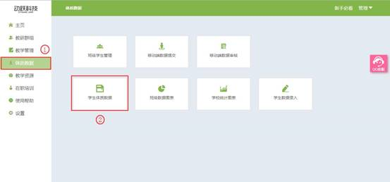

学生体质数据
视频教程：
对导入的学生数据进行查看，直接在体制数据页面查看，直观整体的展示学生的对比，清晰的掌握学生的体质数据。
1. 登录动跃体育教学管理平台后，进入平台操作界面。
2. 点击进入体质数据 > 点击学生体质数据按钮，如下图:

3. 进入学生体质数据页面，点击选择需要查看的数据条件，可查看所有年级包含的所有学生的信息，选择完成后，在下方显示所有符合条件的学生列表。

4. 页面显示筛选下符合条件的信息，在页面右边显示学生单项指标的对比，点击【所有】按钮，页面展示所有所选学生的所有指标的成绩对比；页面右上角的<数据导出>按钮，教师可以导出到本地，更加方便的对比学生的信息，可用于展示、讲解与分析学生体质数据。
5. 学生体质数据多项时查看可向前向后翻页查看，选择学生列表中，需要查看的学生信息，可查看该学生的具体信息。
6. 在学生列表中，点击需要查看学生名字蓝色文本，显示个人信息、综合评分、素质统计图、单项指标以及学生单项素质成绩折线图分析。
>身体素质：人体在活动中所表现出来的力量、速度、耐力、灵敏、柔韧等机能，身体素质是一个人体质强弱的外在表现。包括躯干及上肢、平衡、体重指标、柔韧度、躯干及下肢、肌耐力、心肺有氧、反应。
>运动素质：人体在从事体力劳动或体育运动时，各器官系统表现出的各种机能能力，包括力量、耐力、柔韧、灵敏、速度。
>单项指标：学生在校考察的各项指标成绩。
>折线图分析：学生在该年级的成绩与这一年级应该达到的水平对比分析，直观展示学生在该项成绩的好坏，分为优秀、良好、及格三个水平。